Overview
When tasked with redesigning a government website, I chose to take up the challenge of digging into the US Department of Agriculture’s current design. Upon initial inspection, I quickly began to realize the magnitude of information on the site and how confusing navigating through all that data could be. Thus, I based my interviews and usability testing on the restructuring of the navigation system and ways to improve it.
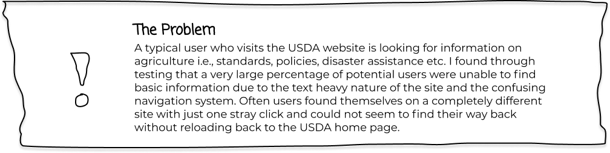 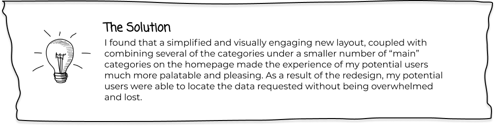research
The main user who is visiting this site is the American farmer trying to carve out the dream of entrepreneurship in today’s ever changing regulatory driven market. He has to stay on top of changes to both state and national policies in order to produce a product that can be sold across the U.S.
Jacob is visiting the USDA website to know the national guidelines and regulations for growing crops and trying to stay ahead of upcoming regulatory changes to state and national requirements for organic food production. If find it hard to certain information, and some places at the website takes him to outside links that he is not aware of.
As part of the research I wanted to find out if Jacob is able to find information about the laws of growing crops in his state. Some of the usability issues that I thought Jacob might have: -Understanding where the farming section is located. -Finding the specific crops my user wants to learn more about. -Seeing if my user knows how to go back to the main page. -Seeing if my user knows how to contact to someone for assistance on the website.
Before I started to redesign the website,as part of the research, I evaluated the website and it's features in order to learn more about what is working and what is not functioning well in the website both on Mobile and the desktop version. Here are some of the pain points that I found: *There are a lot of categories that are not clear in their meaning. *There are links that appear to take you to another page, but actually bring you to a completely separate website. Often these transitions are unnoticeable. *Some of the content is unorganized and some topics should be combined together for simplification.
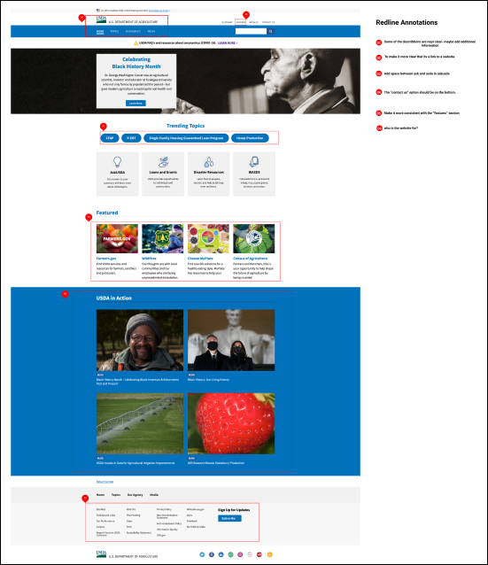As a part of the evaluation, there was for color accessibility testing to make sure the main interaction colors on the website are working for people with disabilities.
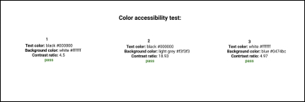In order to evaluate and redesign the information architecture on the website we used the open card sorting method, a method that help us understand the logic and path our user takes while seeing the categories on the existing website. Jacob was given a stack of cards with all the categories of the website, and then asked to group those cards together in any way that he wanted. After that Jacob created labels for the groups that he created. Using this process I was attempting to learn the navigation issues with the website that my user is dealing with, and if all the categories are clear to him. I was also trying to see if there is a need for some categories to be combined in order to make the navigation process simpler for the user.
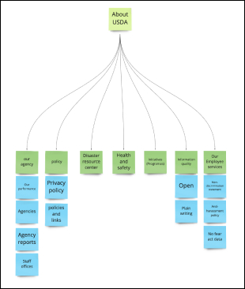 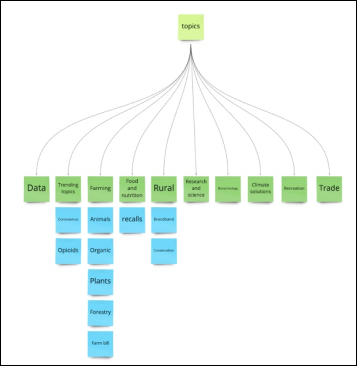After creating new categories for the navigation based on the card sorting, I created a new site map.

The new site Map was a result of some of the categories combined together in order to simplify the navigation process for the user, and avoid him being overwhelmed with a multitude of options.
In order to narrow down a look for the site, I began by creating a mood board that reflected what directions I saw as potentially successful design components and color palates. The American farmer was always my primary theoretical user; thus, I drew inspiration from places that I perceived a farmer would look. I eventually settled on a clean and minimalistic interpretation of a farmer’s market.
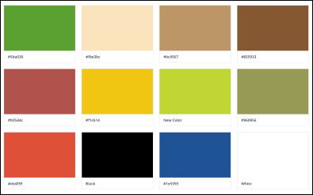 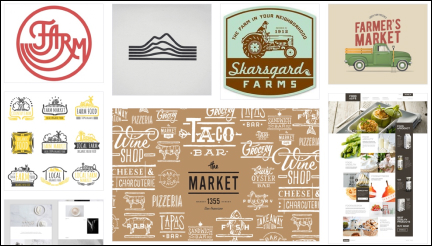Striving to make my design consistent and cohesive, I created the style-tile to reference while creating the high-fidelity wireframes.
The USDA (U.S. Department of Agriculture) provides leadership on food, agriculture, natural resources, and related issues based on public policy. The UI of the website is focused mainly on identifying with the “blue collar” citizen that is living and breathing agriculture. It draws heavily on images and shades of natural cultivation of landscapes and the farmer’s markets where one sells their produce. Pulling inspiration from the cleanliness of a natural scene, the site leans more to a minimalistic and streamlined layout.
Early on in the research, five user testing sessions were held in order to define the potential pain points Jacob might encounter while navigating the website. Some conclusions from testing: Individual users tended to take multiple paths through the website searching for the same data. One user found a source for information that I as a researcher was completely unaware of! These random and meandering sessions with my testers really drove home the point that the current navigation system could be very overwhelming, confusing, and often quite frustrating.
Moving forward with the navigation revamp, I decided to first make mid-fidelity wireframes laying out an updated site map but not changing the overall layout of the site. This set the stage for testing the new navigation bar with a new round of usability sessions.
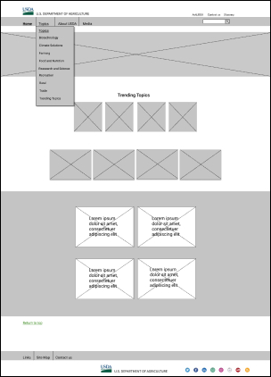 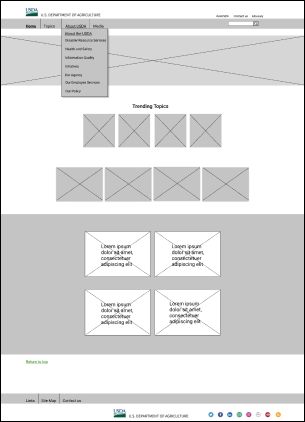 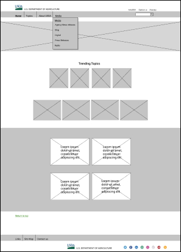Updated navigation bar was examined with four quick user test sessions.
After confirming no issues existed with the updated system, I iterated the page layout and also created a mobile version in order to assess the functionality of both versions.
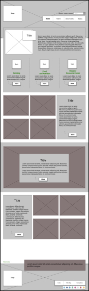 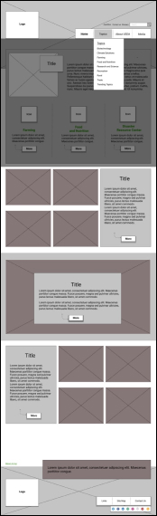 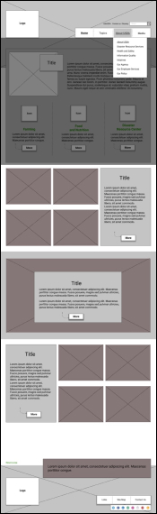 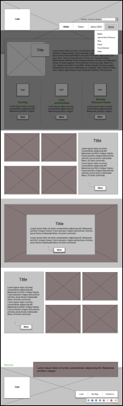 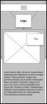 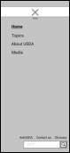With two new versions of my updated navigation ready for examination, I decided to ensure Jacob wasn’t going to have any trouble and conducted four additional “five second” usability tests for both versions.
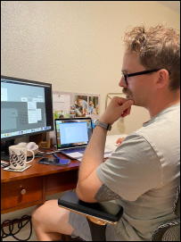With testing complete and results analyzed, I was able to identify the potential issues that Jacob was going to encounter with the redesign, mitigate them, and progress in the stage of adding the style-tile into the mid-fidelity wireframes, which happens to be a favorite of mine.
Desktop High Fidelity Wireframes
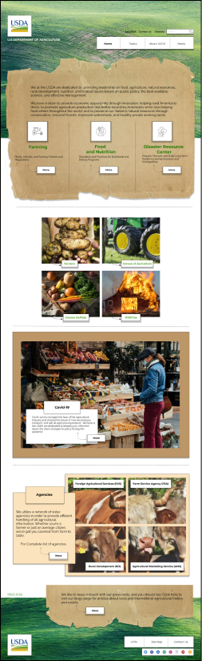 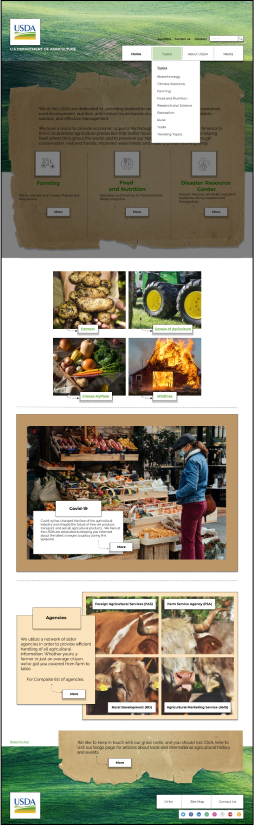 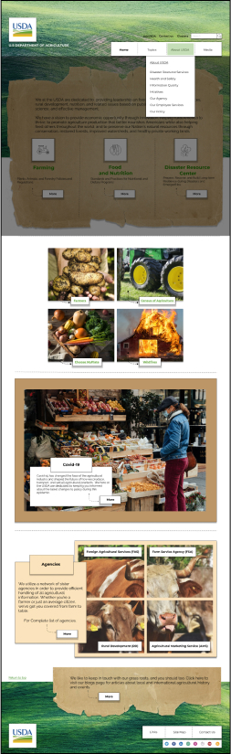 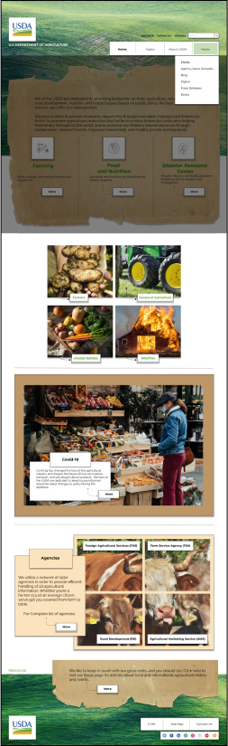Mobile High Fidelity Wireframes
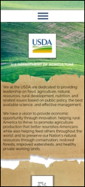 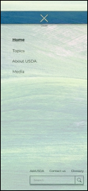 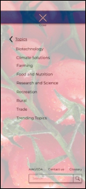After finalizing the high-fidelity wireframes, a series of seven usability tests were conducted with potential users with particular emphasis on navigating the prototype and generating feedback on design aesthetics. The conclusion was that both versions achieved the intended goal of being straightforward, easily navigated, and the visual experience created very positive feedback. In other words, we did what we set out to do…help Jacob.
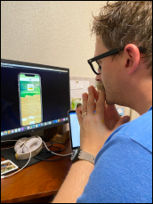Key Learnings And Takeaways
Began the process by being overwhelmed by the original USDA website and developing a general desire to simplify the process of finding data based on who I viewed to be the most common users and developing a homepage that would cater to their needs as well as their senses as they navigated the new site. Throughout the process it became clear that the potential to create a government website that both looked comforting and functioned in a straightforward manner was not something that was unattainable. This project created an understanding of the amount of work it takes to make something that looks simple, and also proved that even the most intimidating and mountainous challenges can be overcome if taken one step at a time.